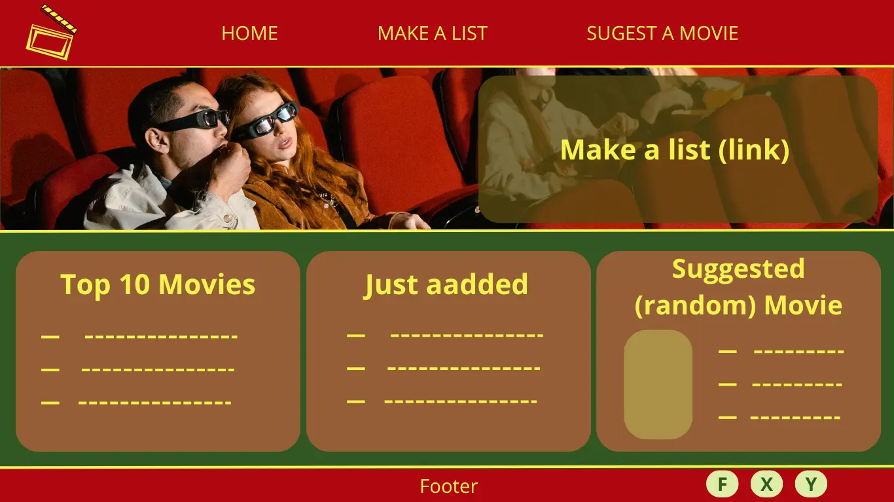
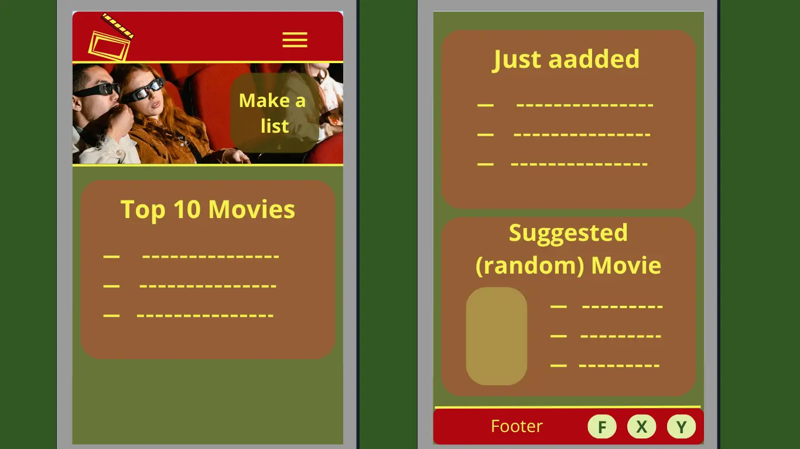

Site Name
Movie Night Guide
This name was chosen because it directly tells users that the website helps them organize and enjoy their movie nights.
Optional domain: movieguide.com
Site Purpose
The site provides users with tools and recommendations to plan a fun movie night. It will feature movie suggestions with details (title, genre, year, rating, poster), allow users to save their favorite movies, and include a form to suggest new movies to the collection.
Scenarios
- “What movies are trending that I can watch this weekend with my friends?”
- “Can I save my favorite movies to a list so I don't forget them?”
- “How do I suggest a movie I love?”
Color Schema
- Primary Color: #325722 (Dark green) — used for main backgrounds.
- Secondary Color: #b00710 (Dark red) — used for secondary backgrounds.
- Accent Color: #f5f24d (Light Yellow) — used for accent, titles and more.
Typography
- Cinzel (serif) — for headings and titles to give a cinematic look.
- Roboto (sans-serif) — for body text for readability and modern style.
Wireframes

